Fukuiikeda, Fukui: things to do, food and stays
Fukuiikeda · Fukui
Fukuiikeda
Highlighted on the Fukui map.
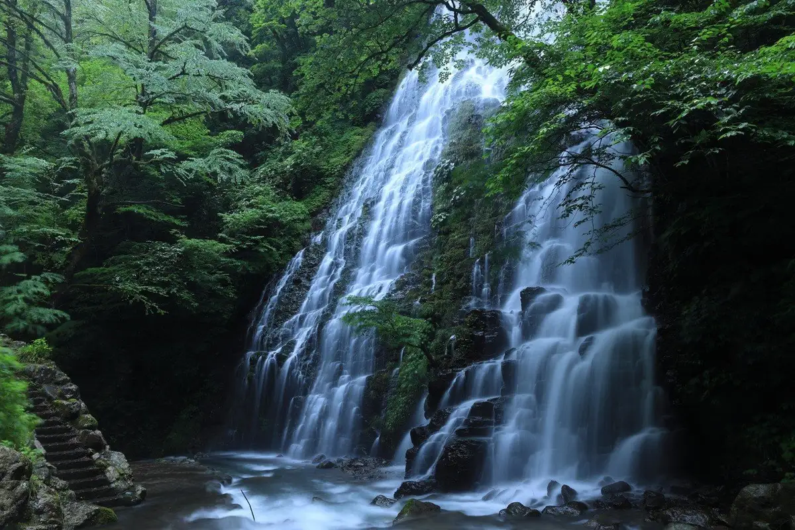
Stay
悠久の宿ふらふ
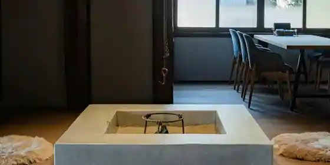
Yukyu No Yado Furafu
Inn in Higashimata, Fukuiikeda with a renovated traditional house.
いけだ体験と里山ごはんの宿 ファームハウス コムニタ
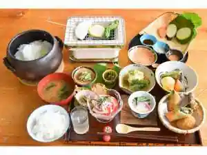
Ikeda Taiken To Satoyama Gohanno Yado Famu House Komunita
Inn in Doaisarao, Fukuiikeda with a quiet countryside setting.
池田渓流温泉 冠荘
Ikeda Keiryu Onsen Kan So
Inn at Ikedakeiryu Onsen in Shizuhara, Fukuiikeda with riverside setting.
Dining
一福
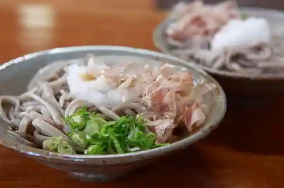
Ichi Fuku
そばの郷 池田屋
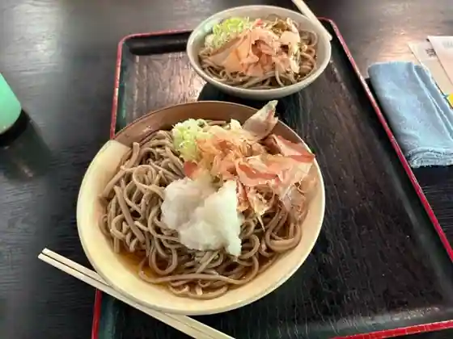
Sobano Sato Ikeda Ya
おもちの母屋
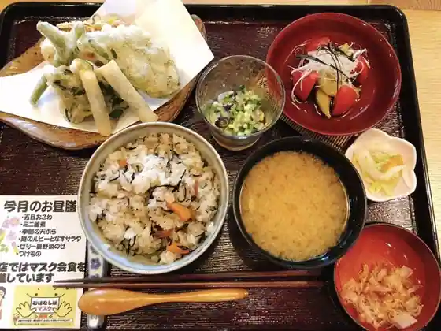
Omochino Omoya
ぬくもり茶屋
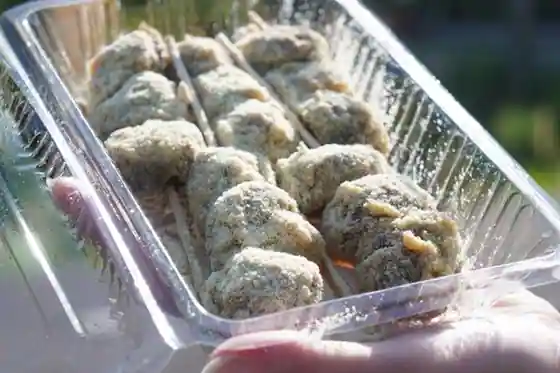
Nukumori Chaya
水車 池田町
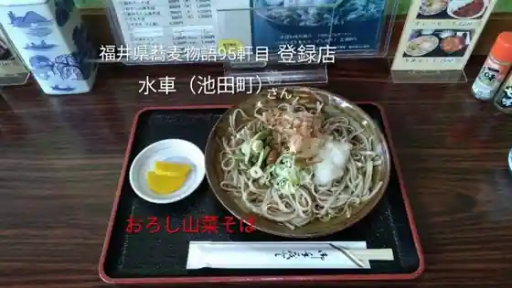
Suisha Ikedacho
しらほ食堂
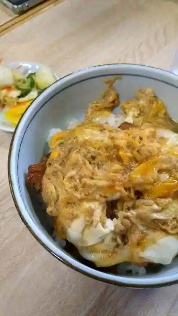
Shiraho Shokudo
道のオアシス フォーシーズンテラス
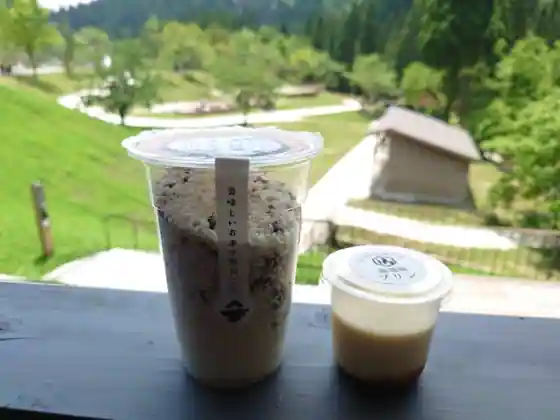
Michi No Oashisu Foshizun Terrace
一休
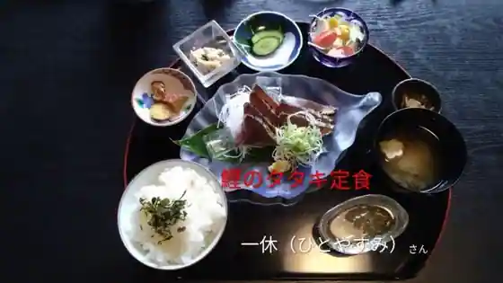
Ikkyu
こってコテいけだ
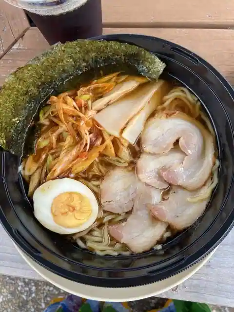
Kotte Kote Ikeda
長尾と珈琲
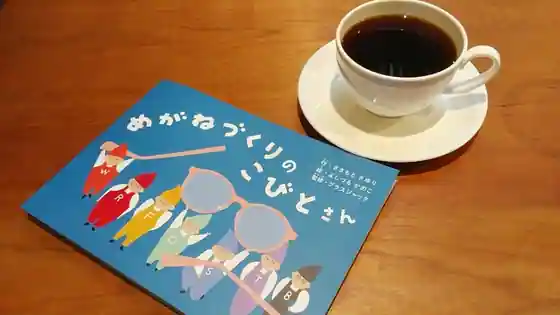
Nagao To Coffee
天池乃宿
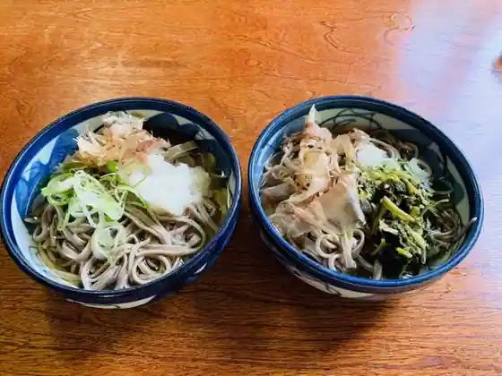
Amachi No Yado
wacca
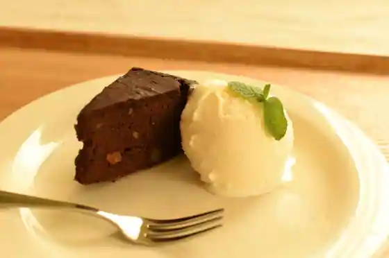
wacca
Cafe&Guesthouse ココラカラ
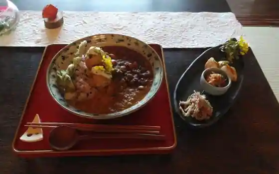
Cafe&Guesthouse Kokorakara
コメコロカフェ
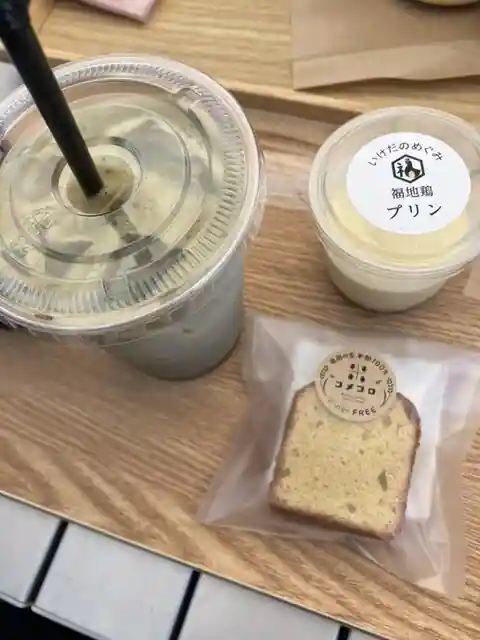
Komekoro Cafe
香
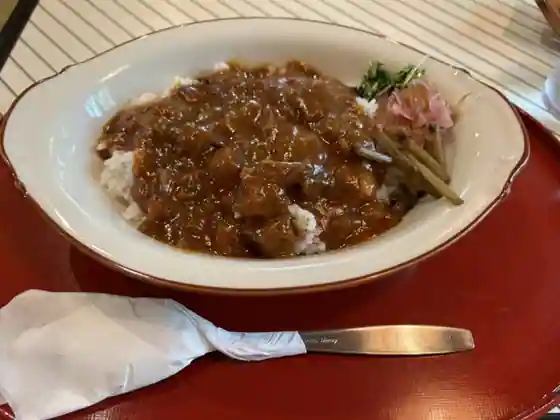
Kaori
カフェピクニック
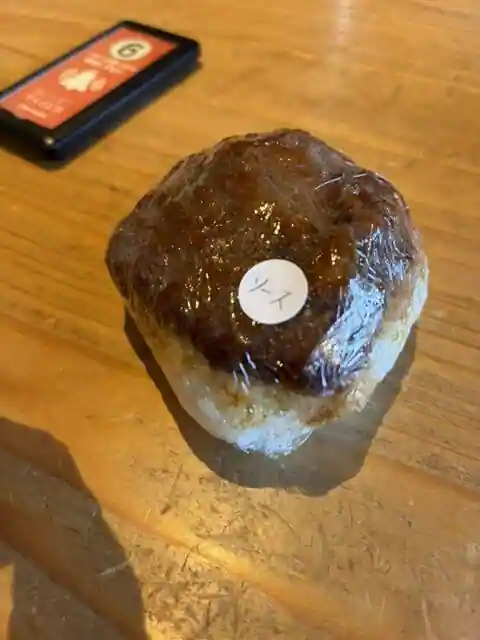
Cafe Pikunikku
池田の森とcoffee Hitotoki
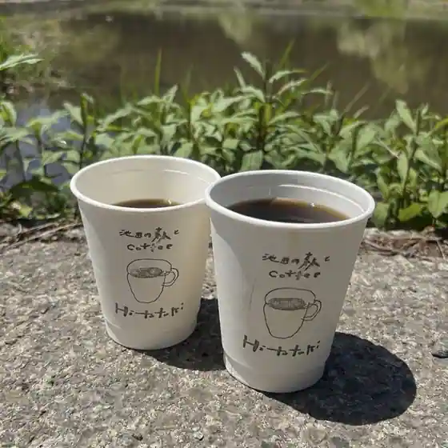
Ikeda No Mori To coffee Hitotoki
zaccabarののありか
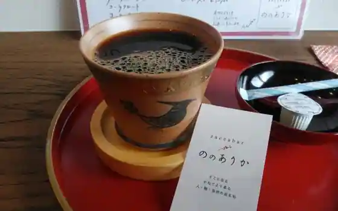
zaccabar Nonoarika
渓流温泉 冠荘
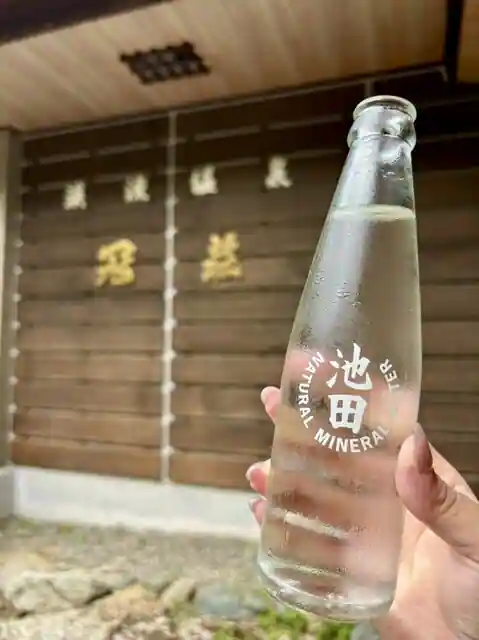
Keiryu Onsen Kan So
小豆書房
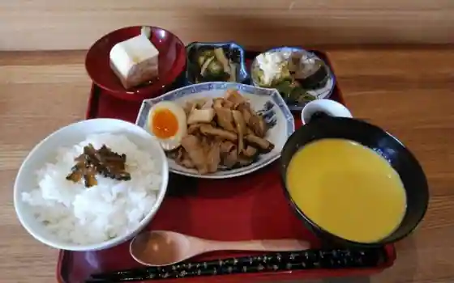
Azuki Shobo
そば処かずら
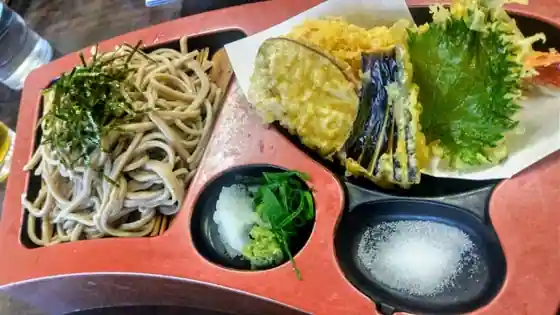
Soba Tokoro Kazura
yomogiyasan
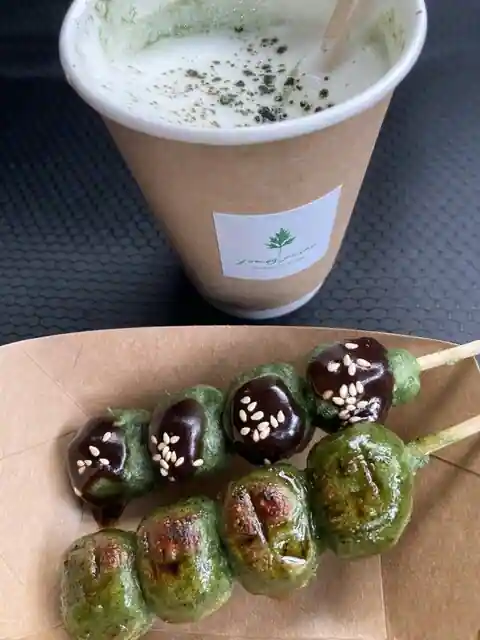
yomogiyasan
もくもくハウス味な館
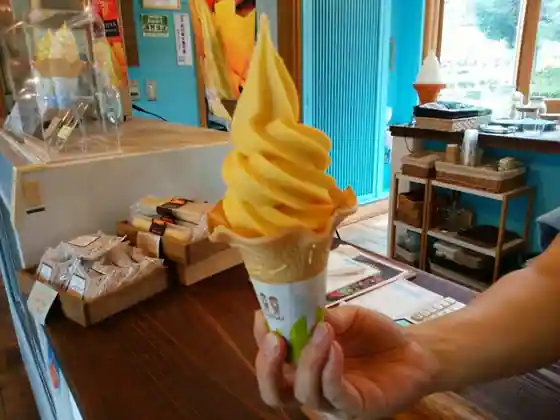
Mokumoku House Aji Na Kan
昭扇閣 べにや
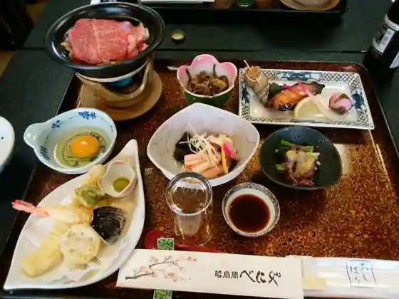
Akira Ogi Kaku Beniya
Sights
Kazura Hashi
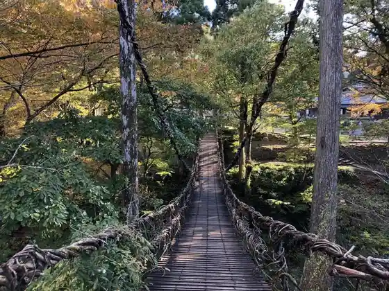
Ryu Sogataki
Tsuriipikunikkuadobencha Ikeda
Keiryu Onsen Kan So
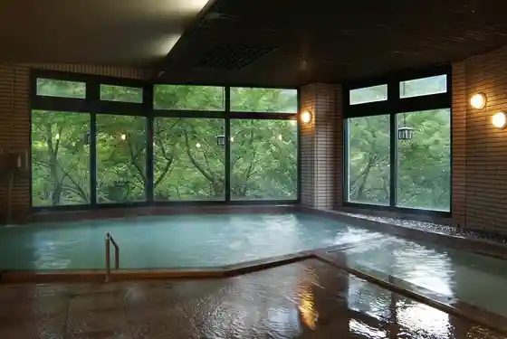
Machi no Eki Kotte Kote Ikeda
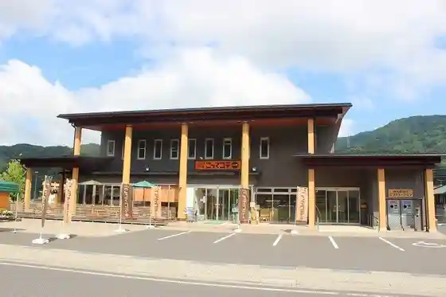
Heko Yama
Soba no Sato Fukuiikeda Ya
U Kan Shrine (Fukuiikeda)
Mori to Kawa no Promenade
Michi no Oashisu Foshiizunterasu
Nomen Art Museum
Asobi Hausu Kodomoto Mori
Amachi no Yado
O Ana Gun
Uddorabo Ikeda
Kanmuriyama
Fukuiikeda Ritsu Kuraiminguoru
Sunami A Shrine
Hakusan Shrine (Fukuiikeda)
Umeda Shi Garden (Kuni Shitei Meisho)
Shimbo Famirii Ski Area
Rentasaikuru - Fukuiikeda - Ikeda no Village Kanko Kosha
Inari no Osugi
Horiguchi Ie House
Fukuiikeda Town Hall